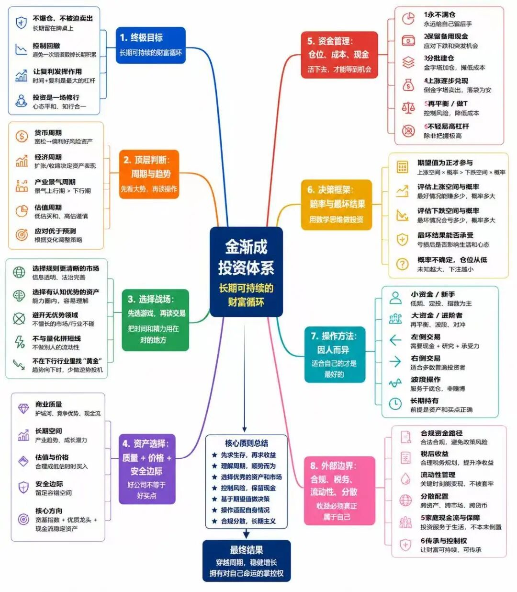

天玑 · 金渐成 ·
存储龙头股涨得很疯。
对巨头的资金虹吸效应开始显现，等SK去纳斯达克上市，估计还会严重些。
这轮的存储和内存元件价格急剧攀升，对苹果和微软等巨头的影响很大，成本使得这俩不得不宣布上调价格，苹果CEO库克表示“在超过40年的从业经历中，从未见过类似情况”。
苹果和微软股价大跌，微软甚至有望触发我过去一年一直心心念念想买到的价格，好事似乎要发生了。
美股七巨头最近普遍下跌，这不是什么坏事，巨头的增长仍旧在持续，而股价调整，可以消化前期过快上涨带来的泡沫，甚至让股价变得更便宜。
比如微软，增长等基本面没有恶化，但现在TTM只有21，百分位（3年）0.13，可以说是非常便宜；
同样便宜的，还有Meta和亚马逊，英伟达也便宜。
英伟达（芯片）、微软/亚马逊（云计算）、台积电（芯片制造）都是AI产业链上非常重要的环节。
过去一段时间，合规原因开始不写自己的一些观点和操作，等930监管新规细则落地后，以上这类内容，有可能也不能写。
我过去一个月时间有一些操作，主要是微软等，高位减仓一些，昨天低位吸一些进来。
以前能写，大家可以有个参照，近一个月及往后不能写，就没有了。后续我更多会写一写趋势和周期类的，没有技术、不懂细操的人，想在从中赚到钱，也会比较难。
人就是这样，有的时候不珍惜，习以为常；等失去了才知道珍贵，却为时已晚。
没吃过细糠的人，希望得到细糠。等真送到面前，又觉得味道不对;想改变细糠，变成自己期待的味道。却不知道能改变的只有自己。
大多数人适合买纳指100和标普500这类宽基指数ETF，而不适合买个股:
一是看不懂，不了解一家企业，纯粹乱买，听风就是雨，没想过适不适合自己；二是拿不住，因为不了解，所以一旦下跌，就开始恐慌，想跑；
三是没技术，不会看筑底信号明显了再做右侧交易，不会通过做T控制好仓位、资金和成本等，不知道什么时候卖掉一些合适；
四是没耐心，恨不得今天买了明天就大涨，或者今天卖了明天就大跌。
以联合健康为例，今天的股价（415美元）距去年历史最低点（235左右），上涨了76.5%；距过去一年几次探底的260价格，上涨了60%…
但是，大多数人就是拿不住，因为过去一年联合健康起起落落，直接把很多人震荡出局。
联合健康用了一年时间，才修复415美元，微软这才刚开始跌没几个月。
对于Meta和微软这种近一年高震荡型的个股，只有两类人适合拿:
一是看懂企业，了然于心，对它有充足信心，适合在筑底信号明显后做右侧交易，长期持有；
二是看懂企业，还会技术，知道怎么通过左侧交易+右侧交易，7成底仓+3成做T控制好安全边际（仓位、资金、成本），安全边际足够，也能拿得住，长期持有。
很多人是没技术、看不懂、没耐心、拿不住，还想赚钱…最实际的，还是买纳指100+标普500这俩宽基指数合适。
什么钱都想赚，七巨头疯涨时追七巨头，台积电疯涨时追台积电，存储疯涨时追存储…最后大概率会被埋进去。
现在的市场，我确实看不太懂，但已经把安全边际控制得很好，以进取型账户为例:
仓位占比上，英伟达第一，微软升至第二，谷歌第三，然后是苹果、台积电、亚马逊、Meta、某个ETF（新增时写过）、AMD、特斯拉、博通，还有少量甲骨文。
目前除了微软和Meta、甲骨文需择时做低成本外，其他的均为负成本持股。
新增的ETF，买入时仓位占比2%，上涨118%后减仓30%，现在的仓位占比还有约3.15%，涨得我也看不懂，所以已提前控制好安全边际。
稳健型账户和防守型账户整体波动较小。整体仓位上，有现金储备约28.8%，大致如上。
仅供参考，还是要结合自身的情况，做适合自己的选择和操作。
有读者用AI做了张图，差不多是我过去几年所写内容的总结，看了看觉得还算全面，就分享给大家:

大家不用谢我，我就是动动手，没做什么。谢谢这位用心的读者即可。
… …
这些天都在陪娃，俩小娃开始教他们识物件，每天陪他们咿咿呀呀。
老大中考结束后，在家陪老二老三做期末复习，赚家教钱。
这段时间我的感觉特别好，家里该热闹时热闹，需要安静时我就窝在花园边上的卧室，坐在窗前发呆、放空。
还有几位朋友，见过就准备撤了。
今年在国内呆了约4个月，内地身份暂时没有放弃，持有香港身份。这种情况下，根据新的CRS规则，不知道明年要不要在内地缴税。之前没遇到过，后续这个问题清晰了，我再告诉大家。
现在有些人会做第二身份备用，或为资产隔离，或为买美股等。各有各的目的，但整体上来说，尽量不选小国身份，特别是那些小岛国，现在是全球金融体系中的重点风险监管对象，开户都难。
整体上，合规最重要，未来二三十年内，合规会被抬升到无以伦比的重要地位。合规没做好，风险管控没做好，无论是做经营还是投资，都形同裸奔。
中小企业更要注意，本来就是把脑袋瓜别在裤腰带上，奋力前行，合规和风险管理没做好，一个浪扑过来，直接被掀翻。
我也准备好了在大洋彼岸再就业，投一些垂直类的细分AI应用，未来大模型三足鼎立，但垂直类目的AI应用，应该会涌现不少机会，比如医疗等。
也希望能在这个过程中，让孩子们多参与，体验AI和科技对这个世界的推动和改变。
孩子还是早点社会化训练比较合适，我家老大和老三的差异就很大:
老大从小跟在身边，从小见证我们一路走来的风雨和人情世故，他做事做人就很稳健，平时我见一些朋友，也会尽量把他带在身边，多看越听；
老三出生时，公司和家境都已经没有机会让他去经历老大的这类过程，导致他对很多的事物理解停留在表层，理论上懂，但实践缺乏。因此我后来才多带他去户外，去仓库搬货等。
同样是种花种菜，老大和老三同龄时的表现就很不一样，老大会把它当一件必要的事认真去做，并仔细检查有没有遗漏；老三会把它当有趣的事去体验，种完浇点水，拍拍屁股头也不回地开心离去…
最近半年，老三在照顾弟弟妹妹的过程中成长很快，他自己也很有成就感，端温水、换纸尿裤等，换好了还要亲弟弟妹妹脸，有时亲完发现有自己口水，还要一边笑一边帮忙擦掉。
他现在最盼望弟弟妹妹快点长大，经常问弟弟妹妹什么时候才能长大，才能叫他哥哥？
我告诉他最少还要半年，他嘟囔一句“还要这么久啊”，想了想，觉得也能接受。
每天晚上他们三个抢着给俩小娃讲睡前故事，但由于老三作业最少最早写完，导致他经常抢到讲故事这活。他最近老给俩小娃讲米小圈的绘本…
我以前经常在下一个孩子还没到来前，提前给他们做预期管理:
“弟弟妹妹是你的帮手，不是对手，你看爸爸需要帮忙时，姑姑和叔叔都及时站出来帮忙”、“你看你的同学/朋友们都有弟弟妹妹，只有你没有，你有没有羡慕人家”、“你的同学/朋友们都没有弟弟妹妹，只有你有，他们肯定很羡慕你”……
诸如此类，结果他们都很把弟弟妹妹当回事，会很开心弟弟妹妹的到来，并帮忙递纸尿裤、拿水等。
在他们做这些动作时，我和我媳妇会及时给他们情绪反馈，夸赞他们能干、爱弟弟/妹妹，弟弟/妹妹长大了肯定很爱他，会在同学面前炫耀“我哥哥/姐姐如何如何厉害”。
小孩子挺有意思的，怎么看怎么想，很多时候需要看父母是怎么引导的。
我也有时也在想，他们未来会是什么样，长大后会不会怀念小时候的自己和家庭。
就这样吧。